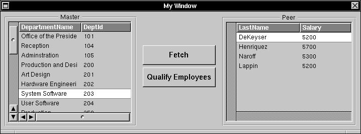

Enterprise Objects Framework Release 1.1 Copyright ©1995 by NeXT Computer, Inc. All Rights Reserved.
| 12 |
Working with the Interface Layer
| Much of the functionality of the interface layer is accessible through Interface Builder. Assuming your data store is a relational database, you can create a model in EOModeler and drag the model (or a single entity in the model) into a nib file to create an entity controller. You can use Interface Builder to customize the behavior of a controller, form associations between a controller and user interface objects, add a control to perform a fetch operation, and thereby have a fully functioning (if minimal) application.
While working in Interface Builder has the advantage of convenience, sometimes you need to interact with interface layer objects more directly: for example, if you're not using a relational database, or if you want to modify the behavior of interface layer objects at run time. This chapter describes how to work with the interface layer programmatically. This chapter is organized into the following sections: |
| "Configuring a Controller" shows you how to set the behavior of a controller. | ||
| "A Controller and its Associations" explains how to add associations to a controller. | ||
| "A Controller and its Data Source" explains how to add a data source to a controller. | ||
| "Linking Controllers" shows you how to use controllers in combination with each other: by setting up a master-detail or master-peer configuration, or by simply chaining controllers together. | ||
| "Monitoring Activity" explains how to use EOController delegate methods to monitor the activity in the interface layer. | ||
| "Modifying an Enterprise Object Directly" describes how to directly apply changes to enterprise objects, and how to coerce a string value into the appropriate value class type before sending it to an enterprise object. |
| This chapter doesn't provide a detailed explanation of the objects in the interface layer; for an overview of how objects in the interface layer interact, see Chapter 3, "From Objects to the User Interface," as well as the interface layer class specifications in the Enterprise Objects Framework Reference. For information on working in the access layer to fetch and modify records, see the appropriate chapter in this section. |
| Configuring a Controller |
| An EOController synchronizes values in enterprise objects with the data displayed in user interface objects. Several aspects of an EOController's behavior are configurable: For example, you can set a controller to buffer edits to objects and to buffer data source operations, direct it to maintain an undo stack, and define the characteristics of its undo stack.
You can use the EOController Inspector in Interface Builder to set the behavior of a controller. However, you can also accomplish this programmatically; this enables you to dynamically control the behavior of a controller at run time. The following code excerpt configures a controller to immediately apply edits and operations, maintain an undo stack that records up to 10 undo marks, and set undo marks by operation: |
 EOController *myController; /* Assume this exists. */
EOController *myController; /* Assume this exists. */
 [myController setSavesToObjectsAutomatically:YES];
[myController setSavesToObjectsAutomatically:YES];
 [myController setSavesToDataSourceAutomatically:YES];
[myController setSavesToDataSourceAutomatically:YES];
 [myController setUndoEnabled:YES];
[myController setUndoEnabled:YES];
 [myController setMarksEveryOperation:YES];
[myController setMarksEveryOperation:YES];

| When automatic saving to objects and the data source are not in effect, you must explicitly send the controller saveToObjects and saveToDataSource messages to apply buffered changes. The default behavior of EOController is to buffer data source operations and edits to enterprise objects; controllers created in Interface Builder default to the opposite behavior.
Buffering data source operations is useful if, for example, your application uses screens that include multiple fields. In that case, you might choose to associate saveToDataSource with a Save button that's used to save changes made to all of the fields in a particular screen. Or if your application uses a master-detail interface, you can design it to perform saveToDataSource in the detail whenever the selection in the master table changes. When you direct a controller to set undo marks for every operation (using setMarksEveryOperation:), the controller records an undo mark whenever you end editing of a field--typically, by pressing Tab or Return. However, if you disable setMarksEveryOperation:, you can set undo marks at any arbitrary point by sending the controller a markUndo message. For example, if your application performs operations on multiple fields or records (such as deletions), you probably don't want the deletion of each individual record to be marked as a separate undoable operation. Rather, you'd set an undo point for the entire set of deletions. To give another example, you can set up your controller to maintain an undo stack and buffer edits to enterprise objects. You can then use the delegate method controller:willSaveEdits:toObject to set an undo mark every time the controller receives a saveToObjects message (controller:willSaveEdits:toObject is sent to the delegate whenever the controller is about to perform a saveToObjects operation): |
 - (NSDictionary *)controller:(EOController *)controller
- (NSDictionary *)controller:(EOController *)controller
 willSaveEdits:(NSDictionary *)edits toObject:object
willSaveEdits:(NSDictionary *)edits toObject:object
 {
{
 [controller markUndo];
[controller markUndo];
 return edits;
return edits;
 }
}
| Subsequently sending the controller an undo message has the effect of undoing the entire set of edits that were buffered at the time you sent the controller saveToObjects. As a point of contrast, if you configured your controller to buffer edits and to set an undo mark for every operation (using the setMarksEveryOperation: method) instead of explicitly setting marks as shown above, issuing an undo message would undo the edits made to each field one by one, instead of undoing the edits as a group.
For more discussion of edit buffering and undo, see Chapter 3, "From Objects to the User Interface" and the EOController class specification in the Enterprise Objects Framework Reference. |
| A Controller and its Associations |
| A controller uses EOAssociation objects to mediate between enterprise objects and the user interface. Associations connect a single user interface object to a named property (key) in an enterprise object or objects managed by the controller. The enterprise object's value for the property is displayed in the association's user interface object. A controller communicates with its associations to coordinate the consistency of data displayed in the user interface with enterprise object data.
You can create most associations in Interface Builder, but sometimes you may need to create one programmatically--for example, when an association crosses nib file boundaries, such as to a panel in another nib file. Or if you create a custom association for a user interface object for which the Framework already provides an association, the only way to use your custom association would be to create and add it programmatically at run time. This code excerpt shows how to create a qualified association between one controller and another: |
 EOController *deptController; /* Assume this exists. */
EOController *deptController; /* Assume this exists. */
 EOController *empController; /* Assume this exists. */
EOController *empController; /* Assume this exists. */
 EOQualifiedAssociation* qualAssoc;
EOQualifiedAssociation* qualAssoc;
 qualAssoc =[[EOQualifiedAssociation alloc]
qualAssoc =[[EOQualifiedAssociation alloc]
 initWithController:deptController key:@"toEmployee"
initWithController:deptController key:@"toEmployee"
 destination:empController];
destination:empController];
 [deptController addAssociation:qualAssoc];
[deptController addAssociation:qualAssoc];
| A qualified association is a special type of association used to link controllers. For more information, see the EOQualifiedAssociation specification in the Enterprise Objects Framework Reference. |
| A Controller and its Data Source |
| Every controller has a data source that supplies it with enterprise objects, and with which it communicates when those enterprise objects change.
If your controller's data source is an instance of EODatabaseDataSource, you can programmatically set the data source, apply qualifiers and fetch ordering to the data source (qualifiers and fetch ordering are described in Chapter 8, "Retrieving Records"), and even swap data sources at run time. In this code excerpt, an application switches between a conventional EODatabaseDataSource and a dictionary data source custom class. If you swap in a new data source, you must first send the controller either a saveToDataSource or a discardOperations message to resolve any outstanding data source operations. |
 EOController *controller; /* Assume this exists. */
EOController *controller; /* Assume this exists. */
 EODatabaseDataSource *realSource; /* Assume this exists. */
EODatabaseDataSource *realSource; /* Assume this exists. */
 DictionaryDataSource *dictSource;
DictionaryDataSource *dictSource;
 /* Save any data source operations. */
/* Save any data source operations. */
 [controller saveToDataSource];
[controller saveToDataSource];
 /* Preserve original data source; swap in temporary datasource. */
/* Preserve original data source; swap in temporary datasource. */
 realSource = [(EODatabaseDataSource *)[controller dataSource]
realSource = [(EODatabaseDataSource *)[controller dataSource]
 retain];
retain];
 dictSource = [[[DictionaryDataSource alloc] init] autorelease];
dictSource = [[[DictionaryDataSource alloc] init] autorelease];
 [controller setDataSource: dictSource];
[controller setDataSource: dictSource];
 [controller fetch];
[controller fetch];
| Linking Controllers |
| You can link controllers together into a "controller chain" to take advantage of the fact that certain messages (fetch, saveToObjects, saveToDataSource, and redisplay) are propagated downward from one controller to the next controller in the chain.
There are three possible configurations: |
| Master-detail, in which the detail controller uses a detail data source that gets its objects based on the selection in the master controller, and forwards all database operations to the master controller's data source. | ||
| Master-peer, in which each controller has its own data source and can fetch and modify objects independently. | ||
| Linking otherwise independent controllers using the setNextController: message. |
| When a controller receives a fetch, saveToObjects, saveToDataSource, or redisplay message, it checks the destination of each of its associations to see if that object also responds to the message. If the object is a controller it responds to the message, checks its own associations, and continues to propagate the message down the controller chain.
Creating a Master-Detail Configuration A master-detail configuration consists of two controllers connected by an EOQualifiedAssociation. The qualified association allocates and directs the detail controller's data source according to what is selected in the master controller. When the object selected in the master controller changes, the qualified association applies a qualifier to the detail controller's data source so that the detail data source returns only those objects that are related to the one selected in the master. Chapter 8, "Creating an Enterprise Objects Framework Project," shows how to create a detail controller by dragging a controller object into your nib file from Interface Builder's EOPalette and connecting it to an entity controller. In order to create a master-detail configuration programmatically, however, follow these basic steps: |
| 1. | Create the master controller. | |
| 2. | Create the master data source. | |
| 3. | Create the detail controller. | |
| 4. | Establish a qualified association between the master controller and the detail controller. |
| The following method shows a simple master-detail configuration. This example lists each department (by name) and the names of all employees who work in each department. The department objects are obtained from the master controller, while the employee objects are obtained by selecting each department object in turn and then retrieving the corresponding employee objects from the detail controller. Note that in practice, this could be done more quickly and efficiently using the data source directly. |
 - listAllEmployees:sender
- listAllEmployees:sender
 {
{
 NSArray *empObjects;
NSArray *empObjects;
 NSArray *deptObjects;
NSArray *deptObjects;
 EODatabaseDataSource *deptDataSource;
EODatabaseDataSource *deptDataSource;
 int i, j;
int i, j;
 int deptCount, empCount;
int deptCount, empCount;
 EOController *myDetailController;
EOController *myDetailController;
 EOController *deptController;
EOController *deptController;
 EOQualifiedAssociation *myQualAssociation;
EOQualifiedAssociation *myQualAssociation;

 deptDataSource = [[EODatabaseDataSource alloc]
deptDataSource = [[EODatabaseDataSource alloc]
 initWithModelName:@"People" entityName:@"Department"];
initWithModelName:@"People" entityName:@"Department"];
 /* Create the master EOController. */
/* Create the master EOController. */
 deptController = [[EOController alloc]
deptController = [[EOController alloc]
 initWithDataSource:deptDataSource];
initWithDataSource:deptDataSource];
 /* Create the detail EOController. */
/* Create the detail EOController. */
 myDetailController = [[EOController alloc]
myDetailController = [[EOController alloc]
 initWithDataSource:nil];
initWithDataSource:nil];
 /* Establish the association between the master data source */
/* Establish the association between the master data source */
 /* and the detail. */
/* and the detail. */
 myQualAssociation = [[EOQualifiedAssociation alloc]
myQualAssociation = [[EOQualifiedAssociation alloc]
 initWithController:deptController key:@"toEmployee"
initWithController:deptController key:@"toEmployee"
 destination:myDetailController];
destination:myDetailController];
 [deptController addAssociation:myQualAssociation];
[deptController addAssociation:myQualAssociation];
 /* Get the entire set of objects. */
/* Get the entire set of objects. */
 [deptController fetch];
[deptController fetch];
 deptObjects = [deptController allObjects];
deptObjects = [deptController allObjects];
 /* Iterate through each department, and display its employees. */
/* Iterate through each department, and display its employees. */
 for(i = 0, deptCount = [deptObjects count]; i < deptCount; i++){
for(i = 0, deptCount = [deptObjects count]; i < deptCount; i++){
 NSLog(@"%@", [[deptObjects objectAtIndex:i] departmentName]);
NSLog(@"%@", [[deptObjects objectAtIndex:i] departmentName]);
 /* From the detail controller, get all of the */
/* From the detail controller, get all of the */
 /* employee objects that work in the currently */
/* employee objects that work in the currently */
 /* selected department. */
/* selected department. */
 empObjects = [myDetailController allObjects];
empObjects = [myDetailController allObjects];
 for(j = 0, empCount = [empObjects count]; j < empCount; j++){
for(j = 0, empCount = [empObjects count]; j < empCount; j++){
 NSLog(@"%@", [[empObjects objectAtIndex:j] lastName]);
NSLog(@"%@", [[empObjects objectAtIndex:j] lastName]);
 }
}
 /* Change the selection in the master; this */
/* Change the selection in the master; this */
 /* automatically updates the detail. */
/* automatically updates the detail. */
 [deptController selectNext];
[deptController selectNext];
 }
}
 return self;
return self;
 }
}
| The enterprise object classes in the above example implement convenience methods for directly accessing the properties lastName and departmentName for employee and department enterprise objects, respectively.
Creating a Master-Peer Configuration When you want two linked controllers to have more autonomy than a master-detail configuration allows, you can create a master-peer configuration. Master-peer configurations are similar to master-detail, except: |
| A peer controller has its own data source (an EODatabaseDataSource). This data source may have an auxiliary qualifier, which further limits the data specified by the EOQualifiedAssociation linking the master controller with the peer controller. In a master-detail configuration, the detail data source can't be further qualified. | ||
| The peer data source does its own fetching and inserting. In a master-detail configuration, the master controller's data source fetches and inserts data at the behest of the detail controller. | ||
| Because the peer data source can act independently, if you change data supplied by the peer, the changes aren't necessarily reflected in the master. In a master-detail configuration, if data changes in the detail, the master is updated accordingly. |
| One way to form a master-peer configuration is drag two model files (or entities from EOModeler) into a nib file (one for the master controller, and one for the peer controller) and connect them as you would for a master-detail configuration.
To programmatically create a master-peer configuration, follow these basic steps: |
| 1. | Create the master data source and controller. | |
| 2. | Create the peer data source and controller. | |
| 3. | Establish a qualified association between the master controller and the peer controller. | |
| 4. | Optionally, apply an auxiliary qualifier to the peer's data source. |
| In the following example, it's assumed that you've created the two controllers (the master controller deptController and its peer controller empController) and their data sources by the common approach of dragging two models (or entities from models) into Interface Builder. Further, it's assumed that you've formed a qualified association between the two controllers by Control-dragging in Interface Builder; this can also be achieved programmatically (see "Creating a Master-Detail Configuration" for examples). For information on creating a master-peer interface, see Chapter 6, "Creating an Enterprise Objects Framework Project."
The following method constructs a qualifier that selects all employees whose salaries are over $5000 a month, and applies the qualifier to the peer's data source (empDataSource). The peer controller is then directed to perform a fetch operation. |
 - getQualifiedEmployees:sender
- getQualifiedEmployees:sender
 {
{
 EOController *empController; /* Assume this exists. */
EOController *empController; /* Assume this exists. */
 EODatabaseDataSource *empDataSource; /* Assume this exists. */
EODatabaseDataSource *empDataSource; /* Assume this exists. */
 EOQualifier *myQualifier;
EOQualifier *myQualifier;
 EOEntity *anEntity;
EOEntity *anEntity;
 EOQualifiedAssociation *qualAssoc;
EOQualifiedAssociation *qualAssoc;
 empDataSource = (EODatabaseDataSource*)[empController dataSource];
empDataSource = (EODatabaseDataSource*)[empController dataSource];
 /* Construct qualifier. */
/* Construct qualifier. */

 myQualifier = [[EOQualifier alloc] initWithEntity:anEntity
myQualifier = [[EOQualifier alloc] initWithEntity:anEntity
 qualifierFormat:@"%A > %f", @"Salary", 5000.0];
qualifierFormat:@"%A > %f", @"Salary", 5000.0];
 /* Apply qualifier to peer data source. */
/* Apply qualifier to peer data source. */
 [empDataSource setAuxiliaryQualifier:myQualifier];
[empDataSource setAuxiliaryQualifier:myQualifier];
 /* Tell peer controller to fetch. */
/* Tell peer controller to fetch. */
 [empController fetch];
[empController fetch];
 return self;
return self;
 }
}
| Figure 55 shows a user interface that could be associated with this method. |
|  |
| Figure 55. Master-Peer Interface
The Fetch button causes the master controller deptController to fetch. The Qualify Employees button invokes the getQualifiedEmployees: method shown above--that is, it applies a qualifier to the peer's data source, and then directs the peer controller empController to fetch. When you start up the application and click one of the two buttons, the result varies according to what you do first: |
| If you click the Fetch button first, all of the department data is displayed in the master table, and all of the employees who work in the selected department are displayed in the peer table (regardless of their salaries). | ||
| If you click the Qualify Employees button first, the master table remains empty, and all of the employees in all departments whose salaries are over $5000 are displayed in the peer table. Subsequently clicking Fetch fetches the department data; then only employees with salaries over $5000 a month who work in the selected department are displayed in the peer table. |
| Once you have clicked both Fetch and Qualify Employees, all of the departments and all of the employees with salaries over $5000 who work in the currently selected department are displayed in the master and peer tables, respectively (this is illustrated in Figure 55). Once a qualifier has been applied to the peer data source, the qualifier remains in effect until you remove it or supply a different qualifier.
Setting a Next Controller You can also chain controllers together to take advantage of the fact that controllers propagate the messages fetch, saveToObjects, saveToDataSource, and redisplay to a specified next controller. You can either set a next controller in Interface Builder or programmatically, using setNextController:. When you chain controllers together, it allows the otherwise independent controllers, each managing their own sets of enterprise objects, to remain synchronized with all significant operations. You can chain any number of controllers together using this method, but remember that messages are propagated down the chain only. This code excerpt links the controller empController to deptController: |
 [deptController setNextController:empController];
[deptController setNextController:empController];
 [deptController fetch];
[deptController fetch];
| When you send a fetch message to deptController, it propagates the message to empController, which then performs its own fetch operation. If you told empController to fetch, however, deptController wouldn't get the message since messages only go down the chain.
Unlike master-peer and master-detail configurations, chained controllers have no interdependencies other than the propagation of fetch, saveToObjects, saveToDataSource, and redisplay messages to the next specified controller. In other words, changing the selection in the data displayed for one controller has no effect on the other. |
| Monitoring Activity |
| An EOController notifies its delegate of nearly every operation it performs, both before and after performing the operation. The delegate then has the opportunity to respond, by allowing or blocking the operation, for example, or by performing its own action in response.
A controller informs its delegate before and after it performs insertions, deletions, and updates; it also notifies the delegate of changes in selection and of undo and save operations. If a change to the data source fails, the delegate has the opportunity to tell the controller whether to continue or to roll back changes (assuming the data source supports roll back). All a delegate need do to receive a notification from its controller is implement the appropriate methods. For example, the following implementation of controller:willSaveToDataSource: displays an attention panel when the controller receives a saveToDataSource message; depending on the user response, the operation either proceeds or aborts: |
 - (BOOL)controllerWillSaveToDataSource:(EOController *)controller
- (BOOL)controllerWillSaveToDataSource:(EOController *)controller
 {
{
 if(NXRunAlertPanel("Save Changes",
if(NXRunAlertPanel("Save Changes",
 "Are you sure you want to make this change?",
"Are you sure you want to make this change?",
 "Save", "Don't Save", NULL)) {
"Save", "Don't Save", NULL)) {
 NSLog(@"Saving to data source...\n");
NSLog(@"Saving to data source...\n");
 return YES;
return YES;
 }
}
 else {
else {
 NSLog(@"Operation aborted; discarding operations.\n");
NSLog(@"Operation aborted; discarding operations.\n");
 [myController discardOperations];
[myController discardOperations];
 return NO;
return NO;
 }
}
 }
}
| Modifying an Enterprise Object Directly |
| When you edit an enterprise object's values in a user interface object managed by an EOAssociation object, the association communicates the changes to its controller, and a chain of events is set in motion that ultimately results in the new value being applied to the enterprise object, saved to the data source, and refreshed in the display. Sometimes, however, you need to modify an enterprise object directly without the intermediation of an association. You can do this using the method setValues:forObject:, with the added benefit that EOController treats changes you make using setValues:forObject: as if they were made by an association. So if the controller is buffering edits, for example, it buffers the edits you make using setValues:forObject:; if it's maintaining an undo stack, it puts the change on the undo stack.
The following action method takes a value entered in a TextField, adds it to the salary of the currently selected employee object, and uses setValues:forObject: to apply the new value to the object. This example is just for the purpose of illustration; a more common approach would be to form an association between the TextField and the salary key in the enterprise object so that you could edit the salary directly. |
 - bonusEntered:sender
- bonusEntered:sender
 {
{
 EOController *employeeController; /* Assume this exists. */
EOController *employeeController; /* Assume this exists. */
 EOGenericRecord *record;
EOGenericRecord *record;
 NSNumber *salary;
NSNumber *salary;
 NSDictionary *tmpDictionary;
NSDictionary *tmpDictionary;
 NSEnumerator *arrayEnum;
NSEnumerator *arrayEnum;
 NSString *key = @"Salary";
NSString *key = @"Salary";
 arrayEnum = [[employeeController selectedObjects]
arrayEnum = [[employeeController selectedObjects]
 objectEnumerator];
objectEnumerator];
 while((record = [arrayEnum nextObject]) != nil) {
while((record = [arrayEnum nextObject]) != nil) {
 /* Get the original value. */
/* Get the original value. */
 salary = [record objectForKey:key];
salary = [record objectForKey:key];
 /* Add the bonus to the original value. */
/* Add the bonus to the original value. */
 salary = [NSNumber numberWithDouble:
salary = [NSNumber numberWithDouble:
 [salary doubleValue] + [sender doubleValue]];
[salary doubleValue] + [sender doubleValue]];
 /* Create a dictionary containing the new value. */
/* Create a dictionary containing the new value. */
 tmpDictionary = [NSDictionary dictionaryWithObjects:&salary
tmpDictionary = [NSDictionary dictionaryWithObjects:&salary
 forKeys:&key count:1];
forKeys:&key count:1];
 /* Use the dictionary to update the employee object. */
/* Use the dictionary to update the employee object. */
 [employeeController setValues:tmpDictionary forObject:record];
[employeeController setValues:tmpDictionary forObject:record];
 }
}
 return self;
return self;
 }
}
| Coercing Values
Except in the case of images, most associations return values edited in user interface objects as NSStrings. To ensure that the value returned is converted to the appropriate value class type before applying it to the corresponding enterprise object, a controller sends its data source a coerceValue:forKey: message. When you aren't using a controller and you directly apply edits to an enterprise object, you need to use coerceValue:forKey: to convert the value to the appropriate type before delivering the new values to the enterprise object in a takeValuesFromDictionary: message. The basic steps for doing this are: |
| 1. | Send the value you need coerced to a data source. | |
| 2. | Create a dictionary and add the coerced value to it. | |
| 3. | Use the dictionary to deliver the new value to the enterprise object using takeValuesFromDictionary:. |
| For example, suppose you have an edited string representation of an employee's salary, and you want apply the new value to the corresponding enterprise object. Since the appropriate value class for salary is NSNumber, the value needs to be coerced before it can be sent to the object.
This code excerpt shows how to coerce the value and then apply it to the Employee object: |
 id <EODataSources> aDataSource; /* Assume this exists. */
id <EODataSources> aDataSource; /* Assume this exists. */
 id Employee; /* Assume this exists. */
id Employee; /* Assume this exists. */
 NSString *salaryString; /* Assume this exists. */
NSString *salaryString; /* Assume this exists. */
 id coercedSalary;
id coercedSalary;
 NSMutableDictionary *dictionary;
NSMutableDictionary *dictionary;
 /* Coerce the value. */
/* Coerce the value. */
 coercedSalary = [aDataSource coerceValue:salaryString
coercedSalary = [aDataSource coerceValue:salaryString
 forKey:@"salary"];
forKey:@"salary"];
 /* Put the coerced value in a dictionary. */
/* Put the coerced value in a dictionary. */
 dictionary = [NSMutableDictionary dictionaryWithCapacity:1];
dictionary = [NSMutableDictionary dictionaryWithCapacity:1];
 [dictionary setObject:coercedSalary forKey:@"salary"];
[dictionary setObject:coercedSalary forKey:@"salary"];
 /* Apply the changes to the enterprise object. */
/* Apply the changes to the enterprise object. */
 [Employee takeValuesFromDictionary:dictionary];
[Employee takeValuesFromDictionary:dictionary];
 [aDataSource updateObject:Employee];
[aDataSource updateObject:Employee];
 [aDataSource saveObjects];
[aDataSource saveObjects];